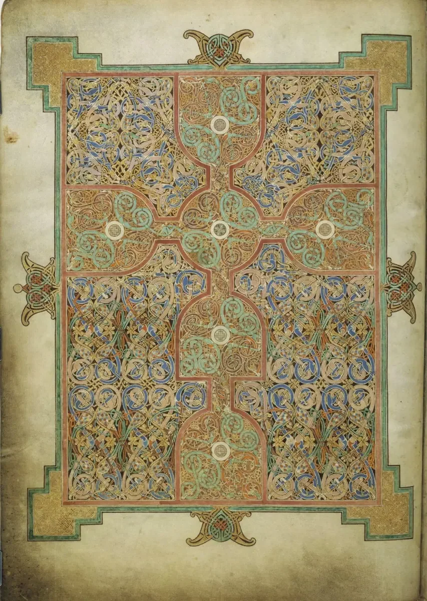
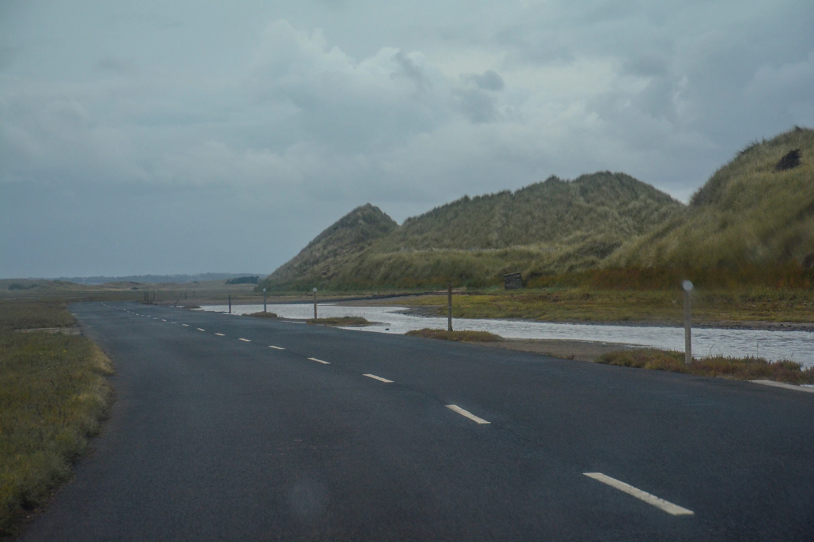
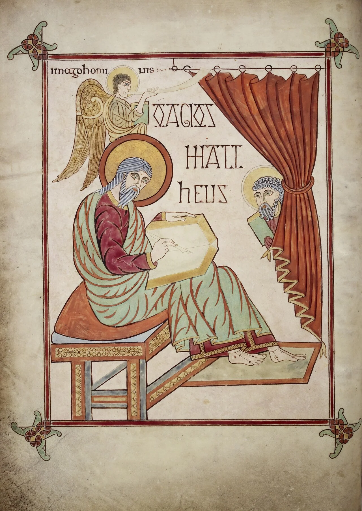
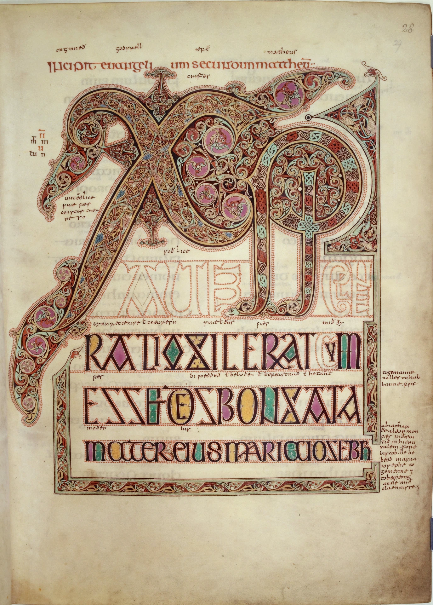
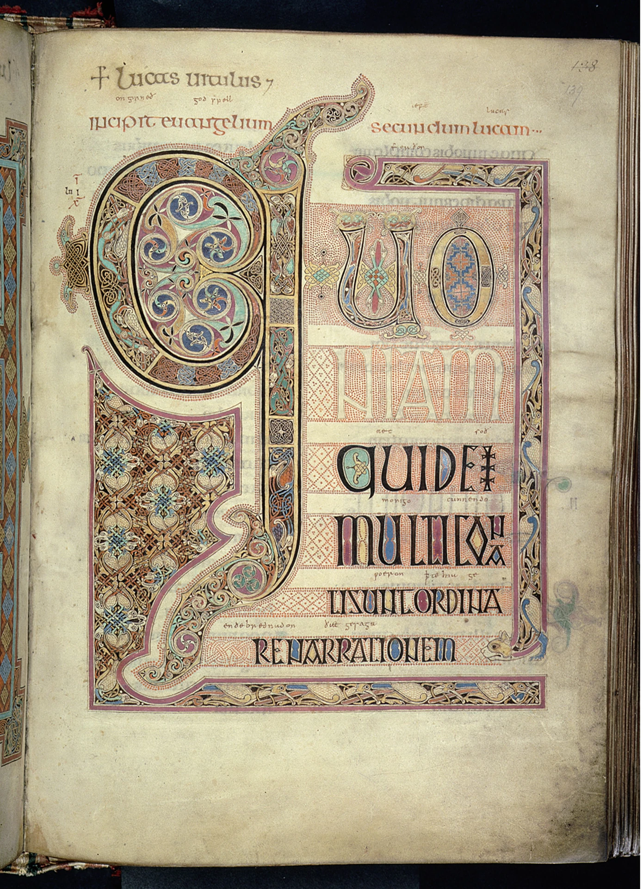
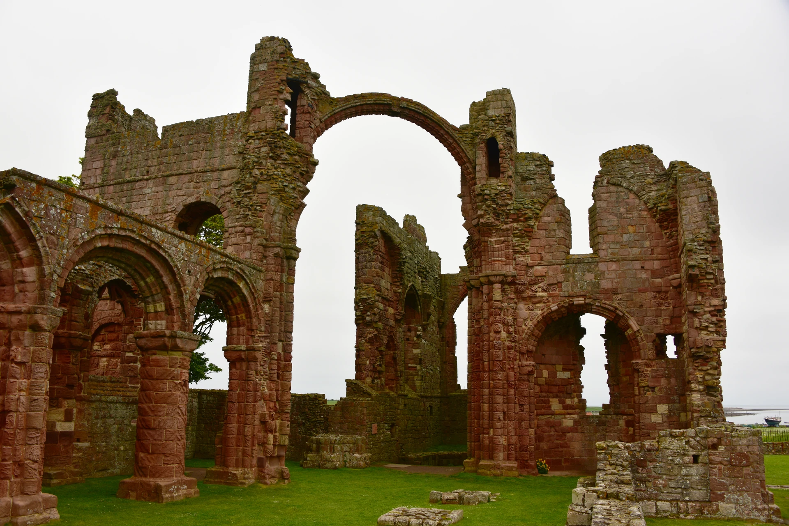

아직 펼치지 않은 카드책이 된 말씀 · 1린디스판 복음서글자가 하나도 없는 이 페이지는 왜 만들었을까요?글자가 하나도 없는 페이지야. 무엇을 그렸을까?
715년 무렵 → 970년 무렵잉글랜드 린디스판 섬 · 체스터르스트리트
린디스판 복음서
1,300년 전 잉글랜드 북쪽의 섬 린디스판에서 네 복음서를 담은 책이 만들어졌어요. 250년쯤 뒤 사제 앨드레드는 이 책 맨 끝에 ‘이 책을 만든 네 사람’을 적어 두었어요. 앨드레드가 적은 차례대로 책 한 권을 완성해 보세요.
아주 옛날 섬마을 수도원에서 그림이 가득한 성경책을 만들었대. 나중에 한 수도사가 책 끝에 “이 책은 네 사람이 만들었어요” 하고 적어 두었어. 우리도 그 차례대로 만들어 볼까?
검수 전 시안이에요(기준서 1판). 책을 만든 사람들의 이야기는 앨드레드가 10세기에 책 끝에 적은 맺음말(영국도서관 목록의 영어 번역)을 따랐어요. 무대 그림은 이 안내서가 그렸어요. 상상은 ‘눈 감고 상상해 보기’에서만 해요.
시안 확인용카드 단계 미리 보기
1
물이 빠지면 열리는 섬
잉글랜드 북동쪽 바닷가의 린디스판은 하루에 두 번 밀물에 길이 끊기는 섬이에요. 바닷물이 빠졌을 때만 둑길로 건널 수 있어요.
635년, 스코틀랜드 아이오나 섬에서 온 수도사 에이단이 이곳에 수도원을 세웠어요. 이 수도원의 주교였던 쿠스버트가 687년에 세상을 떠나자, 사람들은 그를 성인으로 기렸어요.

물이 빠지면 길이 열리는 섬이래! 하루에 두 번 길이 물에 잠겨.
물어보기이 섬에 가려면 언제 출발해야 할까?
2
한 사람이 쓰고 그린 책
715년 무렵, 이 섬에서 네 복음서를 담은 큰 책이 만들어졌어요. 학자들은 한 사람이 이 책을 다 쓰고 그렸다고 봐요. 아마 698년부터 721년까지 린디스판의 주교였던 에드프리스예요.
양피지 259장, 한 장의 크기는 세로 36.5cm, 가로 27.5cm쯤이에요. 마태복음 앞의 그림에서도 마태가 무릎 위 책에 글을 쓰고 있어요.

책 끝의 기록은 이 책이 ‘하나님과 성 쿠스버트를 위해’ 만들어졌다고 적었어요.
한 사람이 이 큰 책을 다 쓰고 그렸대. 그림 속 마태 아저씨도 글을 쓰고 있어.
물어보기마태 아저씨 머리 위에서 나팔을 부는 건 누구일까?
3
섬을 떠난 책
793년, 바이킹이 이 섬의 수도원을 덮쳤어요. 875년 바이킹이 다시 오자, 주교 에아르둘프와 수도사들은 섬을 떠났어요. 쿠스버트의 유해와 에드프리스·에셀왈드의 뼈, 그리고 이 복음서를 들고서요.
일곱 해를 떠돈 끝에 883년, 그들은 옛 로마 요새 자리인 체스터르스트리트에 자리를 잡았어요. 이 책은 그 뒤 112년 동안 이곳에 있었어요.
공동체가 처음 세운 교회는 나무 교회였어요. 사진 속 교회는 그 자리에 뒷날 돌로 다시 지은 건물이에요.
바이킹이 오자 수도사들이 성인의 관이랑 이 책을 들고 섬을 떠났대.
물어보기소중한 것을 들고 먼 길을 떠난다면, 무엇부터 챙길까?
4
책 끝의 네 사람
970년 무렵 체스터르스트리트. 이 공동체의 사제 앨드레드가 250년 된 복음서의 맨 끝 쪽을 펼쳐요. 요한복음이 끝난 그 쪽 빈자리에, 그는 이 책을 누가 만들었는지 적어 넣었어요.
앨드레드는 네 사람의 일을 차례대로 적었어요. 쓰고, 묶고 덮고, 꾸미고, 뜻을 달았다고요. 아래 책상 위의 책에 그 차례대로 하나씩 더해 보세요.
“린디스판 교회의 주교 에드프리스가 처음에 이 책을 썼어요. 하나님과 성 쿠스버트, 그리고 섬에 있는 모든 성인을 위해서요.”
앨드레드의 맺음말 첫 줄, 린디스판 복음서 259r쪽(10세기) · 영국도서관 목록의 영어 번역을 이 안내서가 우리말로 옮김
맺음말의 첫 줄이에요. 맨 끝에 자기 이름을 적을 때, 앨드레드는 스스로를 ‘부족하고 가장 비참한 사제’라고 불렀어요.
책 끝에 이 책을 만든 네 사람이 적혀 있어. 차례대로 하나씩 놓아 볼까?
물어보기네 사람 가운데 누구 일이 가장 오래 걸렸을까?
5
줄 위의 작은 영어
큰 라틴어 글자 위를 보세요. 갈색의 작은 글씨가 낱말마다 얹혀 있어요. 앨드레드가 라틴어 낱말 하나하나 위에 그 뜻을 옛 영어로 적은 거예요.
이 쪽 맨 위, ‘복음서를 시작해요’라는 라틴어 위에 godspell이라는 낱말이 보여요. ‘좋은 이야기’라는 뜻의 옛 영어예요. 오늘의 영어 gospel(복음)이 여기서 나왔어요.

앨드레드는 네 복음서의 뜻풀이를 저마다 누군가에게 바쳤어요. 마태복음은 하나님과 성 쿠스버트께, 마가복음은 주교에게, 누가복음은 공동체 형제들에게, 요한복음은 자기 자신을 위해서요. 여백에는 자기를 이렇게 소개했어요. “앨프레드에게서 태어나 앨드레드라 불리는 나, 좋은 여인의 아들이 말해요.”
큰 글자 위에 작은 갈색 글씨가 보여? 앨드레드가 영어로 적은 뜻이야!
물어보기‘좋은 이야기’라는 말을 우리말 한 낱말로 하면 뭘까?
눈 감고 상상해 보기
970년 무렵, 강가 마을의 작은 교회 곁. 늙은 사제가 창가에서 무거운 책을 펼쳐요. 250년 전 바닷가 섬에서 온 책이에요. 펜촉이 양피지를 긁는 사각사각 소리, 오래된 가죽 냄새. 그는 맨 끝 빈자리에 이름을 하나씩 적어 내려가요. 쓴 사람, 묶은 사람, 꾸민 사람, 그리고 자기 이름까지.
눈을 감아 봐. 할아버지 수도사가 창가에서 커다란 책을 펼쳐. 사각사각, 펜 소리가 나. 책 맨 끝에 이름을 하나씩 적고 있어.
나의 자리
중요한 말을 듣기 전, 나는 어떻게 마음을 준비하나요?
나만의 무늬로 페이지를 꾸민다면 무엇을 그려 넣고 싶어?
마음에 닿는 한 줄을 고르거나 직접 써 보세요. 한 줄을 남기면 이 자리의 도장이 찍혀요. 이 기기에만 저장돼요.
더 깊이
궁금한 칸만 펼쳐 읽어도 괜찮아요.
알고 보면
쿠스버트 린디스판의 수도사이자 주교였고, 687년에 세상을 떠났어요. 이 복음서는 그를 기리며 ‘하나님과 성 쿠스버트를 위해’ 만들어졌어요.
앨드레드 970년에는 체스터르스트리트에서 쿠스버트의 유해를 모신 공동체의 책임자(프로보스트)였어요.
은 8오라 오라(ora)는 옛날 은을 다는 단위예요. 앨드레드는 누가복음의 뜻풀이를 공동체에 바치며 공동체에 들어가는 값으로 은 8오라를 냈고, 요한복음과 함께는 은 4오라를 하나님과 성 쿠스버트께 바쳤다고 적었어요.
양탄자 페이지 네 복음서마다 앞에 글자 없이 무늬로만 채운 쪽이 있어요. 한 권 안에서 복음서 하나하나를 따로 여는 속표지 구실을 했을 거라는 해설도 있어요.
기록마다 다른 점
만든 해 715년 무렵으로 보는 학자가 많지만, 700년 무렵이나 698년 이전으로 보는 학자도 있어요.
보석 표지 빌프리스가 꾸민 처음 표지는 남아 있지 않아요. 바이킹 시대에 잃었을 거라고 보는 설명이 많아요. 지금의 은빛 표지는 1852~1853년 더럼 주교 에드워드 몰트비가 돈을 내 새로 만든 거예요.
네 사람 앨드레드는 250년쯤 뒤의 사람이에요. 그래도 학자들은 그의 맺음말을 대체로 맞고 믿을 만한 기록으로 여겨요.
줄 위의 영어 더 보기

누가복음 첫 쪽에도 커다란 글자 사이사이에 앨드레드의 작은 뜻풀이가 있어요. 맨 위 ‘누가의 복음서를 시작해요’라는 줄 위에도 godspell이 보여요.
앨드레드는 라틴어를 그대로 두고 그 위에 낱말마다 뜻을 달았어요. 라틴어를 모르는 형제들도 복음서를 알아듣게 하려는 일이었다고 학자들은 봐요.
직접 가 보기

확인한 날 · 2026년 11월 18일 · 바뀌기 쉬운 정보라 정기적으로 다시 확인해요
린디스판 섬은 하루에 두 번 밀물에 둑길이 잠겨요. 섬에 가기 전에 노섬벌랜드 주의 ‘안전하게 건너는 시간’을 꼭 확인해요.
섬에는 수도원 터가 있어요. 복음서 진품은 런던 영국도서관에 있고, 고향 북잉글랜드에서도 몇 차례 전시되었어요.
앨드레드의 차례대로 금박
앨드레드가 적은 차례(쓰기 → 묶고 덮기 → 꾸미기 → 뜻 달기)대로 다 놓으면 카드에 금박이 입혀져요.
쓰기 → 묶고 덮기 → 꾸미기 → 뜻 달기 차례로 놓기
아이와 함께 끝까지 채색
아이와 함께 ‘영화처럼 보기’를 끝까지 보면 카드가 채색돼요.
아이와 함께 ‘영화처럼 보기’를 끝까지 보기
근거 보기 (12)
- 영국도서관 소장 목록: Cotton MS Nero D IV — 259r쪽 맺음말의 영어 번역, 뜻풀이 10세기 3/4분기·앨드레드 970년 무렵, 259장·365×275mm, 1853년 표지, 1996·2000·2013년 북잉글랜드 전시
- Art of the Middle Ages: 린디스판 복음서 맺음말 — 앨드레드의 네 복음서 헌정, 은 여덟·네 온스, 89v쪽 ‘살아 계신 하나님, 기억하소서’, 앨프레드의 아들
- Smarthistory: The Lindisfarne Gospels — 한 사람이 쓴 책, 에드프리스(698~721 주교), 낱말마다 단 뜻풀이, 양탄자 페이지
- Anglo-Saxon Manuscripts in Microfiche Facsimile 206번: 875년 에아르둘프와 떠난 일, 883~995년 체스터르스트리트, 970년 프로보스트 앨드레드, 1852~1853년 표지
- Ancient History Sites: 체스터르스트리트 성 마리아·성 쿠스버트 교회 — 일곱 해 떠돎, 883년 정착, 옛 로마 요새, 나무 교회, 1056년 돌 교회
- Catholic Answers 백과(옛 가톨릭 백과): 린디스판 — 635년 아이오나에서 온 에이단
- EWTN 백과: 린디스판 — 875년 바이킹이 다시 왔을 때 쿠스버트의 유해와 떠난 수도사들, 마지막 주교 에아르둘프
- Visit Northumberland: 홀리 아일랜드 둑길 — 하루 두 번 밀물에 끊기는 섬
- Geograph: 린디스판 수도원 터 — 793년 바이킹, 지금 남은 폐허는 1093년 뒤 다시 세운 수도원
- Etymonline: gospel — 옛 영어 godspel, ‘좋은 이야기’
- History Hit: 린디스판 복음서 10가지 — 처음 표지는 바이킹 시대에 잃었을 것, 1852년 몰트비 주교의 새 표지
- Wikipedia: Lindisfarne Gospels(길잡이) — 715년 무렵, 쿠스버트 687년
그림·사진·소리 출처
- 사진: Lewis Clarke · CC BY-SA 2.0 · 위키미디어 공용(geograph)
- 퍼블릭 도메인 · 위키미디어 공용(영국도서관 Cotton MS Nero D IV)
- 사진: JohnBlackburne · CC BY-SA 3.0 · 위키미디어 공용
- 퍼블릭 도메인 · 위키미디어 공용(영국도서관 Cotton MS Nero D IV)
- 퍼블릭 도메인 · 위키미디어 공용(영국도서관 Cotton MS Nero D IV)
- 사진: August Schwerdfeger · CC BY 4.0 · 위키미디어 공용
- 린디스판 복음서 26v쪽 · 퍼블릭 도메인 · 위키미디어 공용
‘처음 만나는 기독교 문화’의 깊은 카드예요. 실제 인물의 사진은 쓰지 않았어요. 카드 단계와 남긴 글은 이 기기에만 저장돼요.